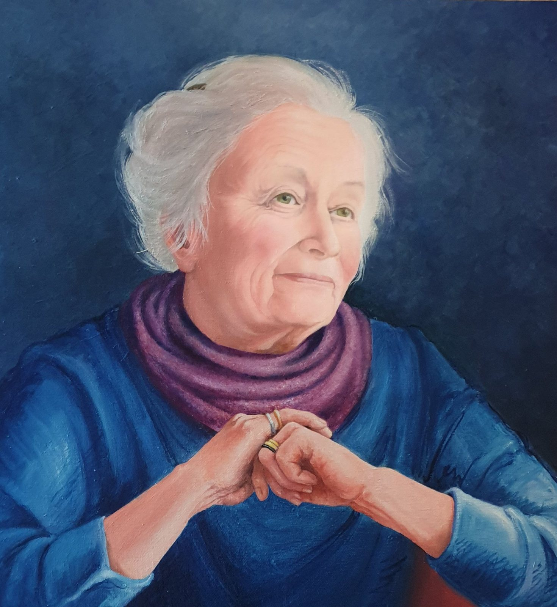

Portrait of a lady
No. 260- Price
- Price on request
[A few lines from Joan about this painting]
Ask about this paintingOr email enquiries@joanmullinsart.co.uk, quoting No. 260. UK only. Collection from Nantwich is free; UK postage is quoted when you enquire.